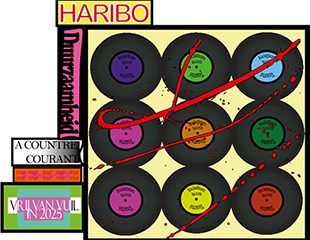

Reincarnation
The Art of a second chance
Upcycling art and decor
Van afval naar kunst, dat geeft de aarde gunst.
Kunst en decor op een duurzame manier creëren
In de wereld van vandaag, waar milieuvervuiling tot een van de grootste uitdagingen behoort, is iedereen verantwoordelijk om voor een schonere
toekomst te zorgen waar de aarde geen vervuiling meer kent. Er zijn verschillende manieren waarop iedereen kan bijdragen aan een schonere wereld van morgen.
Waarom onze planeet vervuilen als je hem ook mooier kan maken?
Upcycling kunst is een vorm van creatieve expressie waarbij je afvalmaterialen en voorwerpen neemt en deze transformeert tot nieuwe en soms functionele kunstwerken. Het idee achter upcycling kunst is om een nieuw leven te geven aan items die anders als afval beschouwd zouden worden, wat bijdraagt aan milieuvriendelijkheid door het verminderen van de vraag naar nieuwe hulpbronnen en het minimaliseren van afval.
Geef het een tweede kans!
Wil je iets weggooien? Give it a second thought, misschien kan je het juist verzamelen en een lijste van maken voor een foto of je spiegel.
Je zult versteld staan van alle verschillende, creatieve manieren die mensen hebben ontdekt om van afval toch iets moois en functioneels te maken.